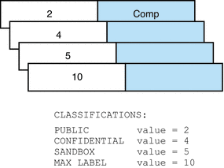
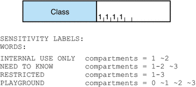

|
|||
|
1. Labels in Trusted Extensions Software How to Plan the Encodings File 3. Making a Label Encodings File (Tasks) 4. Labeling Printer Output (Tasks) 5. Customizing LOCAL DEFINITIONS 6. Example: Planning an Organization's Labels |
Sources for Encodings FilesThe label_encodings file is a flat text file. On a system that is configured with Trusted Extensions, the label of the file is ADMIN_HIGH to prevent ordinary users from reading it. The maximum line length in the label_encodings file is 256 bytes. The file can be edited with any text editor. The security administrator is responsible for the creation and distribution of the label_encodings file. Note - The label_encodings file can be created or edited on any system. However, the file must be checked and tested on a host that is configured with Trusted Extensions. Some organizations have a government-furnished label_encodings file that is based on Defense Intelligence Agency (DIA) specifications. Other organizations might want to base their encodings file on one of the files that are provided with the Trusted Extensions packages. Labels Files in Solaris Trusted Extensions PackagesTrusted Extensions installs sample files in the /etc/security/tsol directory. These samples can be modified to your site requirements.
Alternatively, you can build a label_encodings file from scratch. The syntax and structure of the label_encodings file is provided in Encodings File Syntax. Default Label Encodings FileBy default, the label_encodings.simple file is installed as /etc/security/tsol/label_encodings: ACCREDITATION RANGE: classification= public; only valid compartment combinations: public minimum clearance= needtoknow; minimum sensitivity label= public; minimum protect as classification= public; The ACCREDITATION RANGE definition restricts the user to the following label:
The Classifications section is illustrated in the following figure. Figure 2-2 Classifications in Default label_encodings FileThe compartments in the file are illustrated in the following figure. Figure 2-3 Compartments in Default label_encodings FileDifferences Between GFI Label Encodings FilesThere are two government-furnished files, label_encodings.single and label_encodings.multi. The label_encodings.single file is single-level, and the label_encodings.multi is a multilevel version of the single-level file. The files also differ in the settings in the ACCREDITATION RANGE section. The ACCREDITATION RANGE section describes which classifications and compartments are available to ordinary users. GFI Multilevel Label Encodings FileThe ACCREDITATION RANGE settings in the label_encodings.multi file are shown in the following excerpt: ACCREDITATION RANGE: classification= u; all compartment combinations valid; classification= c; all compartment combinations valid; classification= s; all compartment combinations valid; classification= ts; all compartment combinations valid; minimum clearance= c; minimum sensitivity label= u; minimum protect as classification= u; The ACCREDITATION RANGE definitions enable the site to use all the classifications and compartment words that are defined in the label_encodings.multi file:
GFI Single Level Label Encodings FileThe ACCREDITATION RANGE settings in the label_encodings.single file are shown in the following excerpt: ACCREDITATION RANGE: classification= s; only valid compartment combinations: s a b rel cntry1 minimum clearance= s Able Baker NATIONALITY: CNTRY1; minimum sensitivity label= s A B REL CNTRY1; minimum protect as classification= s; The ACCREDITATION RANGE definition restricts the user to the following label:
Sun Extensions to label_encodings FileSun's implementation of the label_encodings file supports a LOCAL DEFINITIONS section. This section is optional. The section can be appended to an already-existing label_encodings file. The word LOCAL in the keyword that starts the section means local to Sun's implementation. Options in the LOCAL DEFINITIONS section set label translation options and associate colors with labels. The title bars of application windows display each label against a background of the color that is specified for that label. If an invalid color or no color is specified in the COLOR NAMES option, a default color is supplied. Chapter 5, Customizing LOCAL DEFINITIONS describes how to modify the Sun extensions for your site. |
||
|